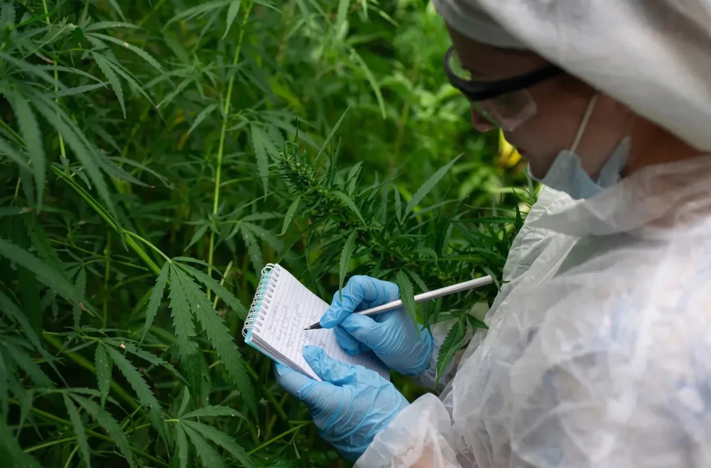

Introduction
For years, the 2018 Farm Bill created opportunities for hemp operators to build businesses around hemp-derived cannabinoids, including products containing Delta-8 THC, THCA, and other intoxicating compounds.
Many companies developed successful direct-to-consumer brands, expanded into multiple states, and established sophisticated e-commerce operations while navigating a regulatory environment that remained far less restrictive than the licensed cannabis industry. That landscape however, is changing rapidly.
Across the U.S., states are tightening regulations on intoxicating hemp products through new Total THC laws, revised licensing requirements, and stronger enforcement actions. At the same time, federal discussions surrounding the future of cannabis regulation continue to evolve, creating additional uncertainty for businesses that have relied on the hemp loophole to bring products to market. With the current federal runway for many intoxicating hemp products expected to end in November, businesses have a narrowing window to evaluate their options and prepare for compliance.
Successfully navigating this transition requires more than understanding changing legislation. It demands careful planning, operational restructuring, and guidance from experienced cannabis consultants who understand the differences between hemp compliance and the highly regulated state-licensed cannabis market.
Every aspect of a business from licensing and facility design, to inventory controls, financial planning, and corporate governance, must be evaluated before entering an adult-use or medical cannabis program. The transition is not simply about obtaining a license, it represents a complete operational transformation.
Businesses moving into regulated cannabis must prepare for mandatory seed-to-sale tracking, rigorous laboratory testing, enhanced security requirements, detailed Standard Operating Procedures (SOPs), municipal approvals, and ongoing regulatory inspections. Unlike the relatively flexible hemp marketplace, state cannabis programs operate under tightly controlled frameworks that leave little room for administrative error.
For operators willing to make that investment however, the opportunities remain significant. State-licensed cannabis markets can provide stronger consumer confidence, more stable regulatory frameworks, and access to long-term growth opportunities that may become increasingly important as federal and state policies continue to evolve.
Rather than viewing today’s regulatory changes as the end of the hemp industry, forward-thinking organizations should view them as the beginning of a strategic migration toward fully regulated cannabis operations. Companies that prepare early will be better positioned to secure licenses, redesign their operations, and establish compliant businesses capable of succeeding in an increasingly competitive marketplace.
This guide explains the key operational, financial, and regulatory considerations involved in moving from hemp to state-licensed cannabis. It also highlights where experienced cannabis consultants, such as the team at CannDelta, can help businesses reduce risk, avoid costly compliance mistakes, and build a practical roadmap for long-term success.
Key Takeaways
- Transitioning from hemp to licensed cannabis involves far more than obtaining a state license, it requires significant operational, financial, and regulatory changes.
- New Total THC laws and state enforcement actions are accelerating the need for hemp operators to evaluate their long-term business strategies.
- Businesses should prepare for seed-to-sale tracking, enhanced testing requirements, facility upgrades, detailed SOPs, and expanded disclosure obligations.
- Working with experienced cannabis consultants can help operators identify compliance gaps, develop transition strategies, and navigate state-specific licensing requirements.
Mapping the Chasm: The Structural Shift from Farm Bill Hemp to Licensed Cannabis
Transitioning from a hemp-derived cannabinoid business to a state-licensed cannabis operation requires far more than changing a product label or securing a new license. It involves fundamentally rebuilding how a business operates. Companies accustomed to relatively flexible e-commerce models must adapt to highly regulated systems where nearly every aspect of cultivation, manufacturing, distribution, and retail is governed by state law.
The differences become apparent from day one. Hemp operators have traditionally relied on commercial shipping networks, standard inventory systems, and relatively straightforward testing protocols. Licensed cannabis businesses, by comparison, must operate within closed-loop supply chains, use approved seed-to-sale tracking software, comply with state-mandated laboratory testing requirements, and satisfy extensive reporting obligations.
Before beginning a transition, operators should conduct a comprehensive compliance audit to identify operational gaps, determine licensing requirements, and establish a realistic implementation timeline. Experienced cannabis consultants can help organizations evaluate existing infrastructure while identifying the investments required to satisfy state regulations.
The following comparison highlights several of the most significant operational changes businesses should expect when entering a regulated cannabis market.
| Operational Area | Hemp-Derived Operations | State-Licensed Cannabis Operations |
| Inventory Tracking | Internal inventory systems, basic lot tracking, and commercial software. | Mandatory seed-to-sale platforms such as METRC or BioTrack with continuous reporting requirements. |
| Product Testing | Testing requirements vary by jurisdiction and product category. | State-certified laboratory testing for potency, pesticides, heavy metals, residual solvents, microbial contaminants, and other regulated analytes before products enter the market. |
| Tax Considerations | Traditional business deductions generally apply where permitted under applicable law. | Qualifying medical cannabis operators may benefit from immediate IRS Section 280E tax relief following the move to Schedule III. Recreational cannabis businesses must continue navigating Section 280E while awaiting the outcome of the broader federal hearings. |
| Distribution | Interstate shipping may be available where products comply with applicable hemp regulations. | Cannabis products generally remain within state-regulated supply chains. |
Each of these operational differences affects staffing, technology investments, budgeting, and long-term business planning. Businesses that underestimate the complexity of this transition often encounter costly delays during licensing, facility inspections, or operational launch.
Perhaps the most significant shift is philosophical. Hemp businesses have often focused on speed to market and broad geographic distribution. State-licensed cannabis businesses however, succeed by demonstrating regulatory discipline. Compliance is no longer simply a legal obligation, it becomes a core business function that influences every operational decision.
This is particularly important for companies expanding into multiple jurisdictions, as no two state cannabis programs are identical. Licensing structures, product categories, ownership rules, packaging requirements, testing standards, advertising restrictions, and municipal approvals can vary considerably from one state to another. Developing a standardized operating model while remaining flexible enough to satisfy individual state requirements is essential for sustainable growth.
A successful transition therefore begins with understanding that compliance is not a single milestone but an ongoing process. Businesses that build regulatory readiness into their corporate culture from the outset are generally better positioned to navigate inspections, adapt to future legislative changes, and compete effectively within the licensed cannabis marketplace.
Surviving the Transition to State Traceability Systems
One of the biggest operational hurdles facing hemp businesses entering the regulated cannabis market is adapting to mandatory state traceability systems. While many hemp operators already maintain inventory records and quality assurance documentation, licensed cannabis programs require a much more detailed level of oversight. Every stage of a product’s lifecycle, from propagation or cultivation through processing, transportation, and final retail sale, must be documented within a state-approved seed-to-sale tracking platform.
Many jurisdictions use systems such as METRC or BioTrack to monitor regulated cannabis products. Although the specific software requirements vary by state, the objective remains the same: providing regulators with real-time visibility into the movement of cannabis throughout the legal supply chain. This level of transparency helps reduce diversion, improve product recalls when necessary, and strengthen consumer confidence in regulated markets.
Rather than tracking inventory in broad production lots, state systems often require individual plants, harvested batches, intermediate materials, and finished products to be uniquely identified and reconciled throughout the manufacturing process. Radio-frequency identification (RFID) tags or similar identifiers are commonly used to maintain this chain of custody, allowing regulators to verify where products originated and how they moved through the licensed marketplace.
For businesses accustomed to operating in the hemp sector, this represents a significant cultural and technological shift. Successfully implementing a seed-to-sale platform typically requires more than purchasing software. Operators must also establish documented workflows, train employees, integrate inventory procedures across departments, and ensure that every transaction is recorded accurately and consistently.
Common areas requiring operational updates include:
- Inventory receiving and reconciliation procedures.
- Harvest and batch creation documentation.
- Manufacturing and extraction workflows.
- Product transfers between licensed facilities.
- Waste tracking and destruction records.
- Product recall procedures and record retention.
Errors within a traceability system can have meaningful regulatory consequences. Inventory discrepancies, incomplete documentation, or delayed reporting may trigger inspections, corrective action plans, or administrative penalties depending on the requirements of the applicable jurisdiction. Building strong internal controls before commencing licensed operations can help reduce these risks while improving overall operational efficiency.
Another important consideration is inventory migration. Businesses cannot generally assume that existing hemp inventory may simply be transferred into a newly licensed cannabis operation. State cannabis programs typically require products entering the regulated supply chain to originate from licensed sources operating within that state’s legal framework. The exact requirements vary by jurisdiction, but operators should expect regulators to scrutinize product origins, chain of custody documentation, and supplier qualifications before inventory can enter licensed commerce.
As a result, many businesses effectively launch their regulated cannabis operations with newly sourced genetics, cultivation material, or raw inputs that satisfy state licensing requirements. Planning for this transition early can reduce costly disruptions and help businesses establish compliant production schedules from the outset.
Working alongside experienced cannabis consultants during this phase can simplify implementation by identifying process gaps, developing compliant inventory controls, and coordinating technology adoption with broader licensing and operational milestones. A well-designed traceability program not only satisfies regulatory expectations but also provides operators with stronger inventory visibility, improved quality management, and greater confidence as they scale within the licensed cannabis marketplace.
The Fractured Map: State-Level Action on the Total THC Law
The regulatory environment surrounding hemp-derived cannabinoids has become increasingly fragmented. While federal policy continues to evolve, many states have moved independently to regulate or restrict intoxicating hemp products, creating a patchwork of rules that operators must navigate carefully. For businesses considering a transition into the regulated cannabis market, understanding these state-level differences is essential when evaluating expansion opportunities and long-term investment strategies.
Rather than treating every jurisdiction the same, operators should develop a state-by-state migration strategy that accounts for licensing requirements, product restrictions, municipal approvals, and enforcement priorities. Experienced cannabis consultants can help businesses assess where their existing operations align with local regulations and where significant changes may be required.
Broadly speaking, states currently fall into three regulatory categories.
Bucket 1: States Integrating Hemp into Existing Cannabis Frameworks
Some jurisdictions have responded to the growth of intoxicating hemp products by strengthening oversight and encouraging or requiring operators to participate in established cannabis licensing systems.
For example, Illinois has adopted legislation aimed at increasing oversight of intoxicating hemp products while expanding consumer protections and regulatory accountability. Businesses seeking to continue operating within the state should expect increased compliance obligations and should carefully evaluate the licensing pathways available under Illinois’ regulated cannabis framework.
Similarly, California has significantly increased enforcement efforts against certain intoxicating hemp products sold outside the state’s regulated cannabis system. Multi-agency enforcement initiatives have emphasized consumer safety, product testing, and licensed distribution, reinforcing the importance of transitioning into compliant regulatory channels for businesses wishing to maintain a long-term presence in one of the country’s largest cannabis markets.
For operators expanding into these jurisdictions, success depends not only on securing appropriate licenses but also on understanding the unique municipal and state-level requirements that govern cultivation, manufacturing, distribution, and retail operations.
States Offering Transitional Opportunities
A smaller number of jurisdictions have created regulatory frameworks that provide existing hemp operators with more structured opportunities to transition into licensed cannabis markets.
Minnesota is frequently cited as an example of a state attempting to build a more integrated pathway between hemp-derived cannabinoid businesses and its developing adult-use cannabis industry. Although compliance obligations remain substantial, the state’s evolving framework may provide qualified operators with opportunities to leverage existing industry experience as they pursue licensure.
The lesson for operators is clear: there is no universal roadmap. A strategy that succeeds in one jurisdiction may be entirely unsuitable in another. Businesses planning regional or national expansion should evaluate each target market independently, recognizing that licensing requirements, enforcement priorities, and commercial opportunities vary considerably across the United States.
Bucket 3: The Functional Safety Valves
A smaller number of jurisdictions have created regulatory frameworks that provide existing hemp operators with more structured opportunities to transition into licensed cannabis markets.
Minnesota is frequently cited as an example of a state attempting to build a more integrated pathway between hemp-derived cannabinoid businesses and its developing adult-use cannabis industry. Although compliance obligations remain substantial, the state’s evolving framework may provide qualified operators with opportunities to leverage existing industry experience as they pursue licensure.
The lesson for operators is clear: there is no universal roadmap. A strategy that succeeds in one jurisdiction may be entirely unsuitable in another. Businesses planning regional or national expansion should evaluate each target market independently, recognizing that licensing requirements, enforcement priorities, and commercial opportunities vary considerably across the United States.
Demystifying IRS Section 280E Liabilities for New Licensees
One of the most significant financial considerations for plant-touching cannabis businesses is IRS Section 280E.
Many hemp businesses have historically operated under traditional tax rules that generally allow ordinary and necessary business expenses to be deducted when calculating taxable income. Licensed cannabis businesses, however, may be subject to Section 280E of the Internal Revenue Code because cannabis remains a controlled substance under the Controlled Substances Act (CSA) at the federal level.
businesses subject to Section 280E, many common operating expenses including marketing, rent, administrative payroll, and certain professional services, may not be deductible for federal income tax purposes. In general, only qualifying Cost of Goods Sold (COGS) may be recovered through inventory accounting.
The practical result is a higher effective tax burden than many new operators initially expect. Financial projections developed during the licensing process should therefore account for these limitations, particularly during the first several years of operation.
Proper accounting systems, inventory management practices, and cost allocation methodologies become increasingly important under this framework. Businesses that establish strong financial controls from the outset are often better positioned to withstand regulatory scrutiny while improving long-term financial performance.
The Insolvency Trap: Understanding Federal Bankruptcy Limitations
Another frequently overlooked consideration involves federal bankruptcy protection.
Hemp businesses generally operate within a federally lawful agricultural framework and may have access to traditional bankruptcy protections, including Chapter 11 restructuring where appropriate. State-licensed cannabis businesses, however, face a more complex legal landscape because cannabis remains federally prohibited under the Controlled Substances Act.
As a result, federal bankruptcy courts have historically been reluctant to administer bankruptcy cases involving businesses whose primary operations involve federally prohibited cannabis activities. Although individual cases continue to shape this area of law, operators should not assume that Chapter 11 protection will necessarily be available if financial difficulties arise.
This reality makes proactive financial planning especially important before entering the licensed cannabis industry.
Rather than relying on bankruptcy protections after problems develop, many businesses explore restructuring alternatives in advance. Depending on the jurisdiction and the organization’s corporate structure, these strategies may include strengthened governance practices, carefully designed holding-company structures, negotiated creditor arrangements, receivership proceedings where available, or other risk-management approaches developed with qualified legal counsel.
Planning for potential insolvency before it occurs is not a sign of pessimism, it is a hallmark of prudent corporate governance.
Monitoring the Potential Impact of Schedule III
At the same time, operators should continue monitoring federal developments surrounding the proposed rescheduling of cannabis to Schedule III.
Although any final regulatory changes remain subject to ongoing federal processes and should not be assumed until formally implemented, many industry participants are closely watching these developments because they could significantly affect taxation, research opportunities, pharmaceutical manufacturing, and other aspects of the regulated cannabis industry.
Businesses that remain informed and maintain flexible corporate strategies will be better positioned to adapt as federal policy evolves. While today’s regulatory environment requires careful planning under existing laws, tomorrow’s framework may present new opportunities for compliant operators prepared to respond quickly and strategically.
Standard Operating Procedures (SOPs): Building an Institutional Auditable Framework
Obtaining a cannabis license is only the beginning of the regulatory journey. State regulators are not evaluating businesses solely on the quality of their products or the strength of their branding, they are assessing whether an organization can consistently operate within a highly controlled regulatory environment. One of the clearest demonstrations of that capability is a comprehensive set of Standard Operating Procedures (SOPs).
Well-developed SOPs provide documented instructions for carrying out routine and critical business functions. More importantly, they demonstrate to regulators that compliance has been embedded into the organization’s daily operations rather than treated as an afterthought. During licensing reviews and regulatory inspections, these documents often serve as evidence that a business has established clear accountability, employee training standards, and repeatable compliance processes.
While individual state requirements vary, operators should expect to develop SOPs covering a wide range of operational activities, including:
- Inventory receiving, storage, and reconciliation.
- Product manufacturing and quality assurance procedures.
- Security incident response and facility access protocols.
- Product recall execution and consumer notification processes.
- Waste handling and destruction procedures.
- Employee training, recordkeeping, and regulatory reporting.
These procedures should be tailored to the facility, equipment, staffing structure, and applicable state regulations. Generic templates may provide a useful starting point, but regulators typically expect businesses to submit documentation that accurately reflects how the operation will function in practice.
SOPs should also establish clear escalation procedures when unexpected events occur. Whether responding to an inventory discrepancy, equipment failure, security breach, or failed laboratory test, employees should understand exactly how issues are documented, investigated, and resolved. Clearly defined workflows reduce operational confusion while helping organizations respond consistently during regulatory inspections.
As businesses grow, SOPs should evolve alongside them. New product categories, expanded facilities, revised regulations, and technological upgrades all require periodic review and revision of internal documentation. Establishing a regular compliance review process helps ensure procedures remain accurate and aligned with current regulatory expectations.
Experienced cannabis consultants can assist businesses in developing site-specific SOPs that satisfy licensing requirements while supporting efficient day-to-day operations. A well-designed compliance program not only reduces the risk of administrative penalties and license suspensions but also creates a stronger operational foundation for sustainable growth in the regulated cannabis industry.
Facility Infrastructure Upgrades: Overhauling Hemp Warehouses for Strict Cannabis Compliance
Transitioning from hemp production to a licensed cannabis operation often requires more than updating policies and obtaining regulatory approvals. Many facilities that adequately supported hemp cultivation, extraction, or manufacturing must undergo significant physical upgrades before they meet the standards imposed by state cannabis regulators. Infrastructure that was once sufficient for hemp processing may not satisfy the stringent security, environmental, and operational requirements associated with adult-use or medical cannabis programs.
Before investing in renovations, operators should conduct a comprehensive facility assessment to identify deficiencies related to zoning, environmental controls, security, workflow, and municipal building requirements. Addressing these issues early can help prevent costly construction delays and licensing setbacks.
Air Quality Controls and HEPA Filtration Standards
Environmental control is one of the most critical considerations when designing a compliant cannabis facility. While hemp operations may have relied on simpler ventilation systems, licensed cannabis cultivation and processing environments frequently require sophisticated HVAC infrastructure capable of maintaining stable temperature, humidity, and airflow throughout the facility.
High-efficiency particulate air (HEPA) filtration systems can help reduce airborne contaminants, while activated carbon filtration is commonly incorporated to assist with odor mitigation and support compliance with municipal nuisance regulations. Proper environmental controls also contribute to crop health by reducing the risk of mold, mildew, and cross-contamination which are issues that can result in failed laboratory testing, product destruction, or regulatory intervention.
Facility design should also support logical workflow separation between cultivation, processing, packaging, storage, and waste management areas. Well-planned layouts minimize contamination risks while improving operational efficiency and employee safety.
Physical Security Controls and Biometric Access Management
Security expectations within licensed cannabis facilities extend well beyond traditional commercial warehouse standards. Most jurisdictions require comprehensive security plans that protect products, employees, and sensitive operational areas while providing regulators with confidence that diversion risks are being effectively managed.
Depending on the jurisdiction, this may include continuous digital video surveillance covering all limited-access areas, secure off-site storage of surveillance recordings, intrusion detection systems, reinforced product storage vaults, visitor management procedures, and controlled access points throughout the facility.
Many operators also implement electronic credential systems or biometric access controls to restrict entry into sensitive areas such as cultivation rooms, processing laboratories, vaults, and inventory storage locations. Combined with detailed access logs and documented security protocols, these systems help demonstrate compliance during regulatory inspections while strengthening internal accountability.
Although these infrastructure investments can be substantial, they should be viewed as long-term assets rather than regulatory burdens. A well-designed facility supports efficient operations, protects product integrity, simplifies inspections, and provides a scalable foundation for future expansion. By working with experienced cannabis consultants, architects, engineers, and security professionals, operators can develop facilities that not only satisfy current licensing requirements but are also positioned to adapt as regulations and business needs continue to evolve.

True Parties of Interest (TPI) and Corporate Disclosure: Navigating the Vetting Process
One of the most underestimated aspects of transitioning from hemp to state-licensed cannabis is the level of scrutiny applied to business ownership and financing. While hemp businesses may have grown through informal partnerships, private loans, or handshake agreements, state cannabis regulators typically require a much more transparent view of the individuals and entities influencing the business.
Most licensing authorities require applicants to disclose their True Parties of Interest (TPI). Although the definition varies by jurisdiction, TPIs generally include individuals or organizations with ownership interests, voting rights, debt arrangements, profit-sharing agreements, management authority, or other forms of significant control over the business. Regulators use these disclosures to assess financial transparency, identify potential conflicts of interest, and confirm that all required background investigations have been completed.
For operators preparing to enter a regulated market, this means reviewing existing corporate structures well before submitting a license application. Legacy agreements that may have worked perfectly well in the hemp industry, including undocumented loans, informal equity promises, convertible debt arrangements, or revenue-sharing agreements, can create unexpected complications if they are not properly documented and disclosed.
Before beginning the licensing process, businesses should consider conducting a comprehensive review of their corporate governance, including:
- Ownership percentages and voting rights.
- Shareholder and operating agreements.
- Investor and lender documentation.
- Revenue-sharing or profit participation agreements.
- Management and consulting contracts.
- Organizational charts identifying all individuals with decision-making authority.
Addressing these issues proactively allows businesses to resolve inconsistencies before they become licensing obstacles. In some jurisdictions, incomplete or inaccurate disclosures can significantly delay application reviews or result in requests for additional information that extend licensing timelines.
Because disclosure requirements differ from state to state, there is no universal checklist that satisfies every regulator. Organizations pursuing multi-state expansion should expect to tailor their documentation to each licensing authority while maintaining consistent corporate governance practices across the enterprise.
Working with experienced cannabis consultants, attorneys, and financial advisors early in the planning process can help operators identify disclosure risks, strengthen corporate records, and prepare complete application packages. Investing time in corporate transparency before filing can reduce regulatory delays and help establish a stronger foundation for long-term growth within the licensed cannabis industry.
Case Study Ingress: Lessons Learned from Multi-State Transitions
One of the most common mistakes made by growing cannabis businesses is assuming that success in one jurisdiction can be replicated with only minor adjustments in another. In reality, every state has developed its own licensing framework, regulatory priorities, municipal approval process, and operational expectations. A compliance strategy that works well in one market may require substantial modification before it can be successfully implemented elsewhere.
For example, some states have adopted relatively open licensing models that encourage market participation, while others maintain limited-license programs, extensive social equity requirements, or highly competitive application processes. Local municipalities may impose additional zoning restrictions, operating conditions, or community engagement requirements that go well beyond state regulations. Businesses that fail to account for these local differences often encounter unexpected delays, increased compliance costs, or unsuccessful license applications.
Operators expanding into multiple jurisdictions should resist the temptation to rely on standardized documentation or a one-size-fits-all operational model. Instead, each market should be evaluated independently, with licensing strategies, facility plans, corporate structures, and operational procedures tailored to the specific regulatory environment.
This is where local expertise becomes especially valuable. Successfully navigating the unique multijurisdictional environment of the local marketplace requires more than understanding state statutes, it demands familiarity with municipal ordinances, regulator expectations, application review processes, and evolving enforcement priorities. Working with experienced cannabis consultants who understand both state and local requirements can help businesses anticipate challenges before they become costly obstacles.
Ultimately, successful transitions are built on preparation rather than assumption. Organizations that invest the time to understand each jurisdiction’s unique regulatory landscape are better positioned to secure licenses, establish compliant operations, and build sustainable businesses capable of adapting as the cannabis industry continues to evolve.
Final Thoughts
The regulatory landscape for hemp-derived cannabinoid products continues to evolve, requiring operators to make strategic decisions about the future of their businesses. For many organizations, transitioning into the regulated cannabis industry is no longer simply an opportunity for growth, it is becoming an important consideration for maintaining long-term market access and building a sustainable operation within an increasingly structured regulatory environment.
Successfully navigating that transition requires far more than completing a license application. Businesses must evaluate their corporate structure, financial planning, facility infrastructure, operational procedures, security protocols, supply chain management, and ongoing compliance obligations. Organizations that approach this process proactively are generally better positioned to reduce regulatory risk, avoid costly delays, and establish a strong foundation for future expansion.
Every state’s regulatory framework presents unique challenges, making careful planning and experienced guidance invaluable throughout the transition process. Whether your organization is evaluating licensing opportunities, redesigning facilities, implementing seed-to-sale tracking systems, developing Standard Operating Procedures, or preparing complex application materials, working with knowledgeable cannabis consultants can help simplify the journey while supporting long-term compliance.
Transitioning your brand from the closing hemp loophole to the fully regulated cannabis market requires regulatory precision, operational discipline, and a clear strategic roadmap. The experienced team at CannDelta helps businesses navigate every stage of that process, from licensing strategy and facility design to compliance program development and operational readiness. If you’re ready to position your business for long-term success in the regulated cannabis industry, contact CannDelta to begin building your transition plan today.
Frequently Asked Questions
In most cases, operators should not assume that existing hemp inventory can simply be transferred into a state-licensed cannabis supply chain. State regulations generally require cannabis products to originate from licensed sources operating within that jurisdiction’s regulatory framework. Businesses planning a transition should review applicable state requirements, evaluate existing inventory strategies, and develop a compliant migration plan before beginning licensed operations.
Not necessarily. Many state licensing authorities evaluate applicants based on their ability to meet current regulatory requirements rather than their participation in the hemp industry. However, applicants should ensure that prior business activities complied with applicable laws and that all ownership interests, financial relationships, and operational history are accurately disclosed during the licensing process. Consulting experienced cannabis consultants can help identify and address potential issues before an application is submitted.
The answer depends on the facility’s existing infrastructure and the requirements of the target jurisdiction. Some facilities may only require targeted upgrades, while others may need more extensive renovations to satisfy cannabis-specific standards for environmental controls, security, sanitation, workflow, and quality assurance. A comprehensive facility assessment is often the most effective way to determine the scope of required improvements.
True Party of Interest (TPI) requirements generally require applicants to disclose individuals and entities with ownership interests, financial influence, or operational control over the business. Legacy financing arrangements, convertible debt, revenue-sharing agreements, or undocumented investment relationships may require review before a license application is submitted. Conducting a corporate governance assessment early in the process can help reduce delays and improve application readiness.
There is no universal timeline because implementation depends on the complexity of the business, the licensing process, facility readiness, technology integration, employee training, and state-specific regulatory requirements. Many businesses should expect the transition to occur over several months rather than a matter of weeks. Developing a phased implementation plan with clearly defined milestones can help reduce operational disruptions while supporting a successful launch into the regulated cannabis marketplace.